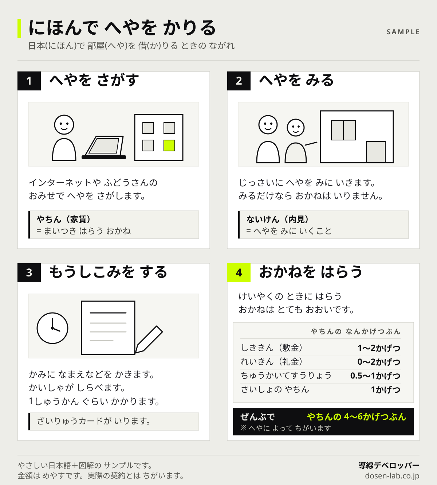

Plain Japanese
日本に住む外国人に、
日本語のまま伝わるページへ。
外国人スタッフの募集、入居の案内、入学の説明。内容は正しいのに、読んだ相手に伝わっていないことがあります。原因は多くの場合、言語ではなく文章の作りです。当社は翻訳をしません。日本語のまま読める形に整え、図で理解の入口を作ります。
翻訳する前に、日本語を見直すという選択
日本に住む外国人には、日常的な日本語なら読める方が多くいます。その層に対しては、多言語に翻訳するより、日本語をやさしくするほうが早く、安く、更新も続けやすくなります。
多言語サイトは、言語が増えるほど更新が止まります。料金を変えた、受付時間を変えた、そのたびに全言語を直す必要があるからです。結果として、日本語版だけが最新で、他の言語は古い情報のまま残る。これは珍しいことではありません。
やさしい日本語であれば、直す場所は1つです。そして日本語を母語としない人だけでなく、高齢者や子どもにも読みやすくなります。
判断の基準は自分たちで決めていません。出入国在留管理庁が公開している在留支援のためのやさしい日本語ガイドラインに沿って書き換えます。
書き換えの例
難しい言葉を消すだけではありません。一文を短く切り、順番を入れかえ、あいまいな表現をなくします。
| よくある書き方 | やさしい日本語 |
|---|---|
| 契約締結後、速やかに初期費用をお支払いいただきます。 | けいやくの あとで、さいしょの おかねを はらいます。 |
| 入居審査を通過された場合に限り、鍵をお渡しします。 | しんさに とおったら、かぎを わたします。 |
| 保証会社のご利用が必須となります。 | ほしょうがいしゃを つかいます。かならず つかいます。 |
| ご来店いただけない場合は対応いたしかねます。 | おみせに きてください。きたら てつづきが できます。 |
右の列は、ただ平易にしただけではありません。「〜いたしかねます」のような否定の遠回しな表現を、できることの説明に置きかえています。何ができないかより、何をすればいいかを書くほうが、行動につながります。
図解のサンプル
文章だけで足りない部分は図にします。特に金額と手順は、読むより見るほうが速く伝わります。

初期費用は、日本で部屋を借りる外国人がもっとも驚く部分です。「家賃は8万円」と聞いていた人に、契約時に40万円を求める。ここで話が止まる例は多く、先に図で示しておくと、断られる理由が1つ減ります。
当社が行うこと、行わないこと
できないことを先に書きます。ここを曖昧にすると、あとで困るのはお客様だからです。
| 内容 | 対応 |
|---|---|
| 文章のやさしい日本語への書き換え | 行います |
| 手順・金額・条件の図解、漫画、動画 | 行います |
| LP・ホームページの構成と実装 | 行います |
| 問い合わせ・応募フォームの導線設計 | 行います |
| 英語・中国語などへの翻訳 | 行いません |
| 在留資格・ビザ手続きの代理や法的判断 | 行いません |
| 掲載内容が制度上正しいかの保証 | 行いません |
| 問い合わせ数・応募数の保証 | 行いません |
翻訳を行わない理由は単純で、ネイティブによる翻訳と校正の体制がないからです。品質を保証できないものは請けません。翻訳が必要な場合は、多言語翻訳を専門とする制作会社をご検討ください。
在留資格に関する申請の代理や個別の法的判断は、行政書士などの業務にあたるため行いません。当社が引き受けるのは、御社がすでに把握している内容を、伝わる形に置きかえることまでです。掲載する制度の内容が正しいかどうかは、御社または専門家にご確認いただきます。
想定しているご依頼
共通しているのは、契約や手続きの説明が長く、口頭での補足に時間がかかっているという点です。
- 特定技能・登録支援機関、外国人材の紹介会社の募集ページ
- 外国人向け賃貸を扱う不動産会社の、契約の流れと初期費用の案内
- 日本語学校・専門学校の募集要項と入学までの流れ
- 外国人スタッフを採用する医療・介護・飲食の求人ページ
- 自治体や団体の、生活情報を伝えるページ
料金
ページ数と図の点数で変わります。まず簡易チェックだけでも構いません。
| 内容 | 金額 |
|---|---|
| 既存ページの簡易チェック | 5,000円 |
| 導線診断（書き換え方針まで） | 50,000円 |
| LP・ホームページ制作 | 150,000円から |
| 図解・漫画・動画つきの構成 | 300,000円から |
要件によっては個別見積りになります。金額が先に決まっている場合は、その範囲でできることをお伝えします。
よくある質問
やさしい日本語とは何ですか。
難しい言葉を言いかえ、一文を短くし、あいまいな表現をなくした日本語のことです。出入国在留管理庁がガイドラインを公開しており、民間事業者も参考にできます。日本語を母語としない人だけでなく、高齢者や子どもにも読みやすくなります。
英語や中国語への翻訳もしてもらえますか。
行いません。ネイティブによる翻訳・校正の体制がないためです。当社が行うのは、日本語のまま読める形に整えることです。
在留資格やビザの手続きについて相談できますか。
できません。申請の代理や個別の法的判断は行政書士などの業務です。当社は、御社が把握している内容を伝わる形に置きかえるところまでを担当します。
読んだ人が必ず理解できるようになりますか。
保証しません。読み手の日本語のレベルはさまざまです。当社が行うのは、伝わらない原因になりやすい表現を減らし、図で補うことです。問い合わせ数や応募数も保証しません。
どのくらいで仕上がりますか。
ページ数によりますが、書き換えと図解で2〜4週間が目安です。原稿と掲載したい情報が揃っているほど短くなります。